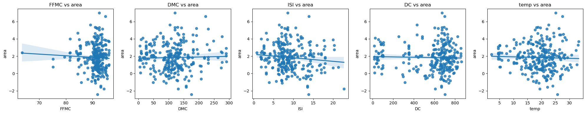

Using a dataset of forest fires from Portugal, I conducted a X^2 GOF test on the average log transformed area burned from the fires versus the month when the fires occured. I expected that the fire area burnt would more strongly correlate with summer months but upon removing 0 values and months with too little data, I found that there was no predictable progression for when the fires occured. Chi-squared Statistic: 133.44535804252422, P-value: 5.458164270329626e-25.
With the same dataset, I also wanted to test the true relevance of the Canada Fire Indices -- FFMC DMC ISI DC -- given in the csv. ISI (initial spread index) was the index we hypothesized would be most intuitively correlated to the fire area, and we were correct. However, the indexes all provided very little value in terms of prediction capability due to the correlation coefficients being very low. This led me to search for the alternative prediction methods in the later parts of this application.
